BAB IV
IMPLEMENTASI DAN PENGUJIAN
4.1 Lingkungan Pengembangan
Pada bagian ini akan dijelaskan mengenai lingkungan pengembangan yang digunakan dalam membangun sistem pencarian jurnal penelitian menggunakan metode Content-Based Filtering.
4.1.1 Perangkat Keras
Spesifikasi perangkat keras yang digunakan dalam pengembangan sistem adalah sebagai berikut:
- Processor: Intel Core i5 / AMD Ryzen 5 atau setara
- RAM: 8 GB DDR4
- Storage: SSD 256 GB
- Display: 1920 x 1080 pixels
4.1.2 Perangkat Lunak
Perangkat lunak yang digunakan dalam pengembangan sistem meliputi:
- Sistem Operasi: Windows 10/11
- Python 3.9+
- Flask Framework 2.0+
- Visual Studio Code
- Browser: Google Chrome / Mozilla Firefox
4.1.3 Library dan Framework
Library Python yang digunakan dalam implementasi sistem:
| Library | Versi | Fungsi |
|---|---|---|
| Flask | 2.0+ | Web framework untuk backend |
| scikit-learn | 1.0+ | Implementasi TF-IDF dan Cosine Similarity |
| NLTK | 3.6+ | Natural Language Processing |
| numpy | 1.21+ | Operasi numerik dan array |
| requests | 2.26+ | HTTP requests ke API eksternal |
4.2 Implementasi Sistem
Implementasi sistem pencarian jurnal penelitian ini terdiri dari beberapa komponen utama yang saling terintegrasi untuk menghasilkan rekomendasi jurnal yang relevan berdasarkan query pengguna.
4.2.1 Arsitektur Sistem
Sistem dibangun dengan arsitektur client-server menggunakan Flask sebagai backend dan HTML/CSS/JavaScript sebagai frontend. Berikut adalah alur kerja sistem:
Alur Kerja Sistem
1. User memasukkan query pencarian
2. Sistem mengambil data dari API (CrossRef/Semantic Scholar)
3. Proses preprocessing teks dilakukan
4. Perhitungan TF-IDF untuk setiap dokumen
5. Perhitungan Cosine Similarity antara query dan dokumen
6. Hasil diranking berdasarkan nilai similarity tertinggi
7. Tampilkan hasil ke pengguna
4.2.2 Implementasi Content-Based Filtering
Content-Based Filtering diimplementasikan dengan menggunakan kombinasi TF-IDF (Term Frequency - Inverse Document Frequency) dan Cosine Similarity. Metode ini menganalisis konten dari jurnal (judul dan abstrak) untuk menentukan relevansi dengan query pengguna.
Rumus TF-IDF
Dimana TF = frekuensi term dalam dokumen, IDF = log(N/df) + 1
Rumus Cosine Similarity
Mengukur kemiripan berdasarkan sudut antara dua vektor dalam ruang TF-IDF
4.3 Antarmuka Sistem
Pada bagian ini akan ditampilkan antarmuka sistem yang telah diimplementasikan beserta penjelasan fungsi dari masing-masing komponen.
4.3.1 Halaman Pencarian Utama
Halaman utama sistem menampilkan form pencarian dimana pengguna dapat memasukkan kata kunci untuk mencari jurnal penelitian yang relevan. Sistem menyediakan berbagai filter untuk mempersempit hasil pencarian.
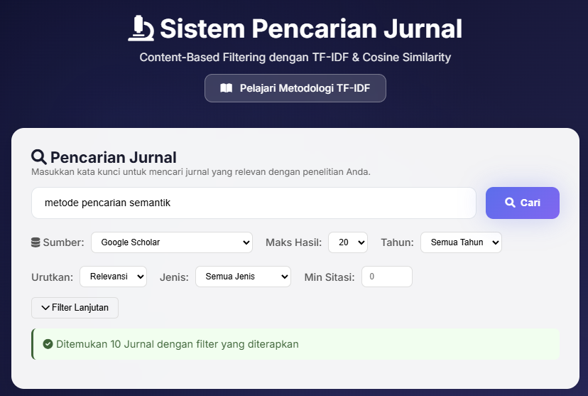
Gambar 4.1 Tampilan Halaman Pencarian Utama Sistem
Berdasarkan Gambar 4.1, halaman pencarian utama terdiri dari beberapa komponen:
- Search Box: Input field untuk memasukkan kata kunci pencarian
- Filter Options: Opsi untuk memfilter berdasarkan tahun, sumber data, dan jumlah hasil
- Search Button: Tombol untuk menjalankan proses pencarian
4.3.2 Navigasi Proses Content-Based Filtering
Setelah proses pencarian selesai, sistem menampilkan navigasi 4 tahap proses Content-Based Filtering. Pengguna dapat mengklik setiap tab untuk melihat detail dari masing-masing tahap perhitungan.
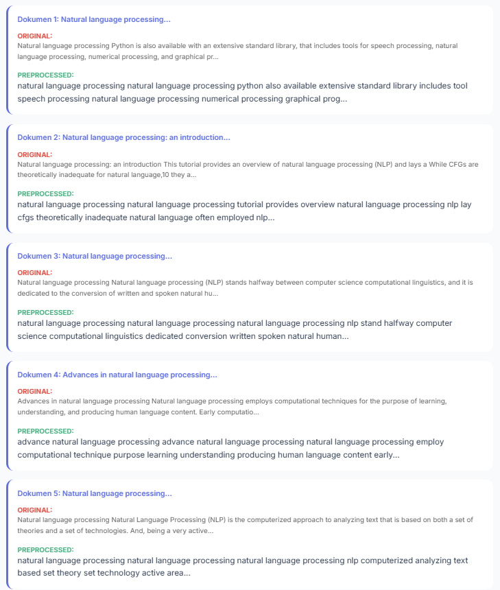
Gambar 4.2 Navigasi 4 Tahap Proses Content-Based Filtering
Navigasi proses CBF terdiri dari 4 tahap utama:
- Preprocessing: Tahap pembersihan dan normalisasi teks
- TF-IDF: Tahap perhitungan bobot term
- Cosine Similarity: Tahap perhitungan kemiripan
- Ranking: Tahap pemeringkatan hasil akhir
4.3.3 Tahap 1: Text Preprocessing
Tahap pertama dalam proses Content-Based Filtering adalah preprocessing teks. Pada tahap ini, teks dari query dan dokumen jurnal dibersihkan dan dinormalisasi agar dapat diproses lebih lanjut.
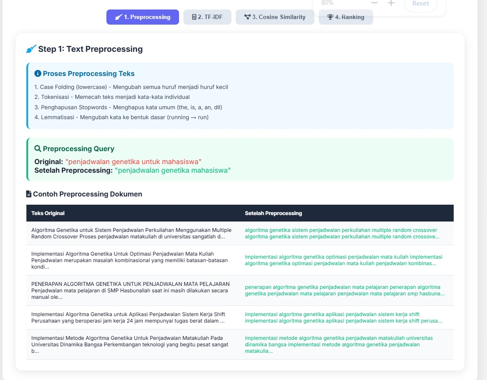
Gambar 4.3 Visualisasi Tahap Preprocessing Teks
Proses preprocessing teks terdiri dari 4 langkah utama:
Langkah-langkah Preprocessing
1. Case Folding (lowercase) - Mengubah semua huruf menjadi huruf kecil
2. Tokenisasi - Memecah teks menjadi kata-kata individual
3. Penghapusan Stopwords - Menghapus kata umum (the, is, a, an, dll)
4. Lemmatisasi - Mengubah kata ke bentuk dasar (running → run)
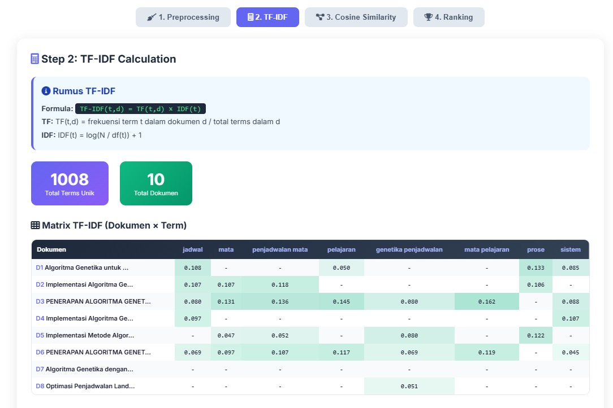
Gambar 4.4 Contoh Hasil Preprocessing Query dan Dokumen
Gambar 4.4 menunjukkan contoh hasil preprocessing dimana query asli "penjadwalan genetika untuk mahasiswa" diubah menjadi "penjadwalan genetika mahasiswa" setelah melalui proses preprocessing. Tabel juga menampilkan perbandingan teks original dengan teks setelah preprocessing untuk setiap dokumen jurnal.
4.3.4 Tahap 2: Perhitungan TF-IDF
Tahap kedua adalah perhitungan TF-IDF (Term Frequency - Inverse Document Frequency). Metode ini memberikan bobot pada setiap term berdasarkan frekuensi kemunculannya dalam dokumen dan keunikannya di seluruh koleksi dokumen.
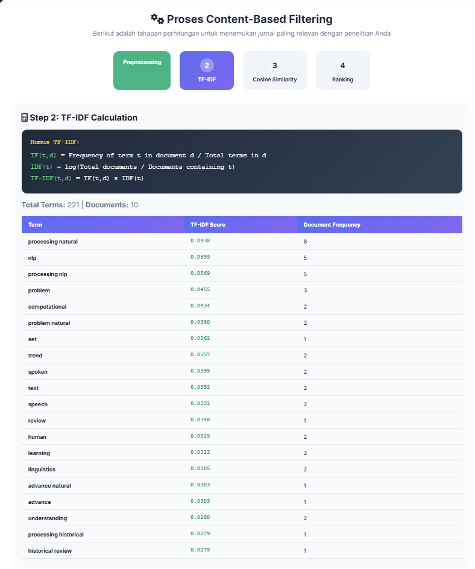
Gambar 4.5 Visualisasi Perhitungan TF-IDF dengan Matrix
Berdasarkan Gambar 4.5, sistem menampilkan:
- Rumus TF-IDF: Formula matematika yang digunakan dalam perhitungan
- Total Terms Unik: 1008 term unik ditemukan dari seluruh dokumen
- Total Dokumen: 10 dokumen jurnal yang dianalisis
- Matrix TF-IDF: Tabel yang menunjukkan nilai TF-IDF untuk setiap kombinasi dokumen dan term
Interpretasi Matrix TF-IDF: Nilai yang lebih tinggi (ditandai dengan warna hijau) menunjukkan bahwa term tersebut lebih penting dan relevan untuk dokumen tersebut. Nilai 0 atau "-" menunjukkan term tidak muncul dalam dokumen.
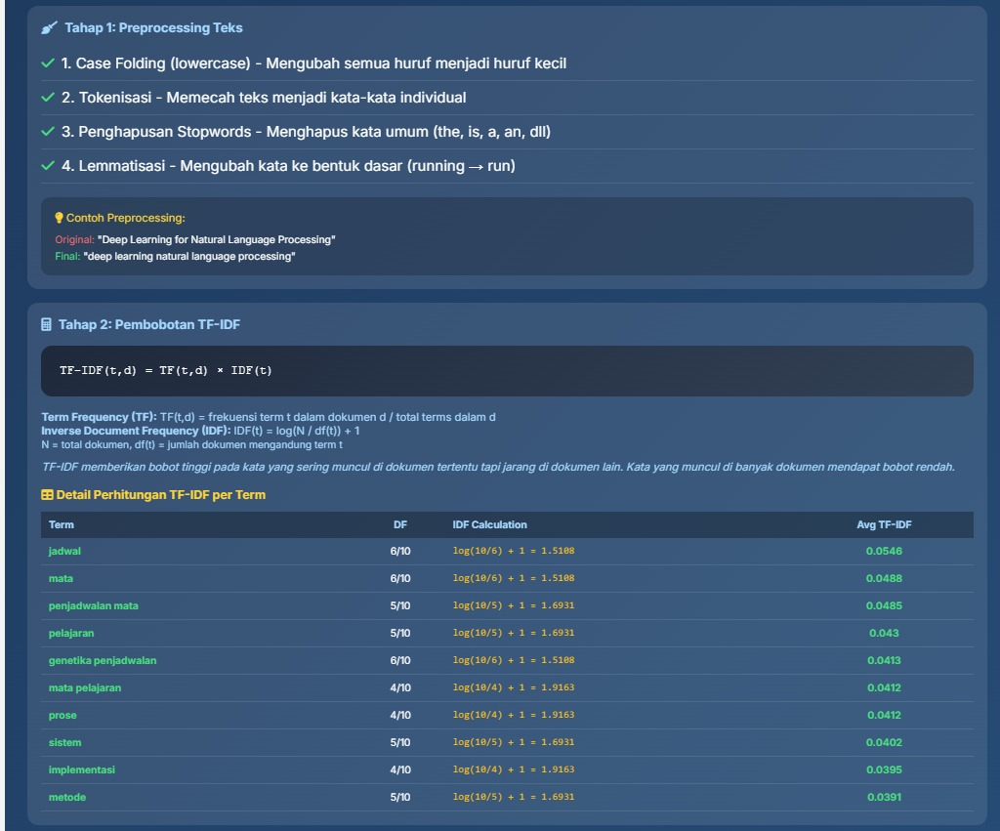
Gambar 4.6 Detail Perhitungan TF-IDF per Term
Gambar 4.6 menampilkan detail perhitungan TF-IDF untuk setiap term teratas, meliputi:
- Term: Kata yang dianalisis
- DF (Document Frequency): Jumlah dokumen yang mengandung term tersebut
- IDF Calculation: Perhitungan IDF dengan rumus log(N/df) + 1
- Avg TF-IDF: Rata-rata nilai TF-IDF untuk term tersebut
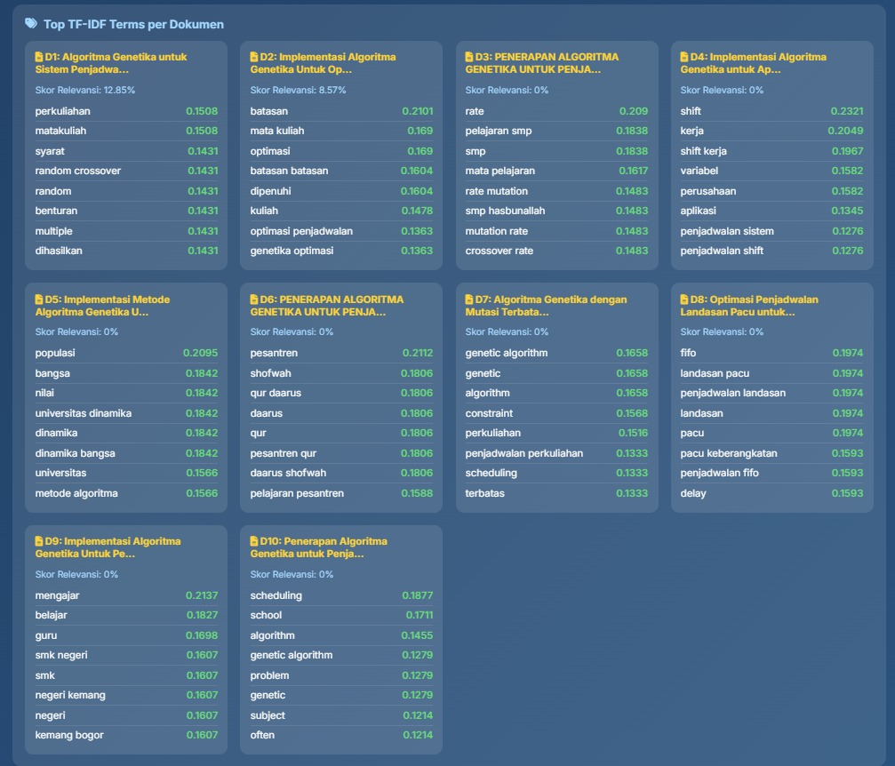
Gambar 4.7 Top TF-IDF Terms untuk Setiap Dokumen
Gambar 4.7 menunjukkan term-term dengan nilai TF-IDF tertinggi untuk setiap dokumen (D1-D10). Visualisasi ini membantu memahami kata kunci penting yang menjadi karakteristik setiap jurnal.
4.3.5 Tahap 3: Perhitungan Cosine Similarity
Tahap ketiga adalah perhitungan Cosine Similarity yang mengukur tingkat kemiripan antara query pengguna dengan setiap dokumen jurnal berdasarkan sudut antara vektor TF-IDF mereka.
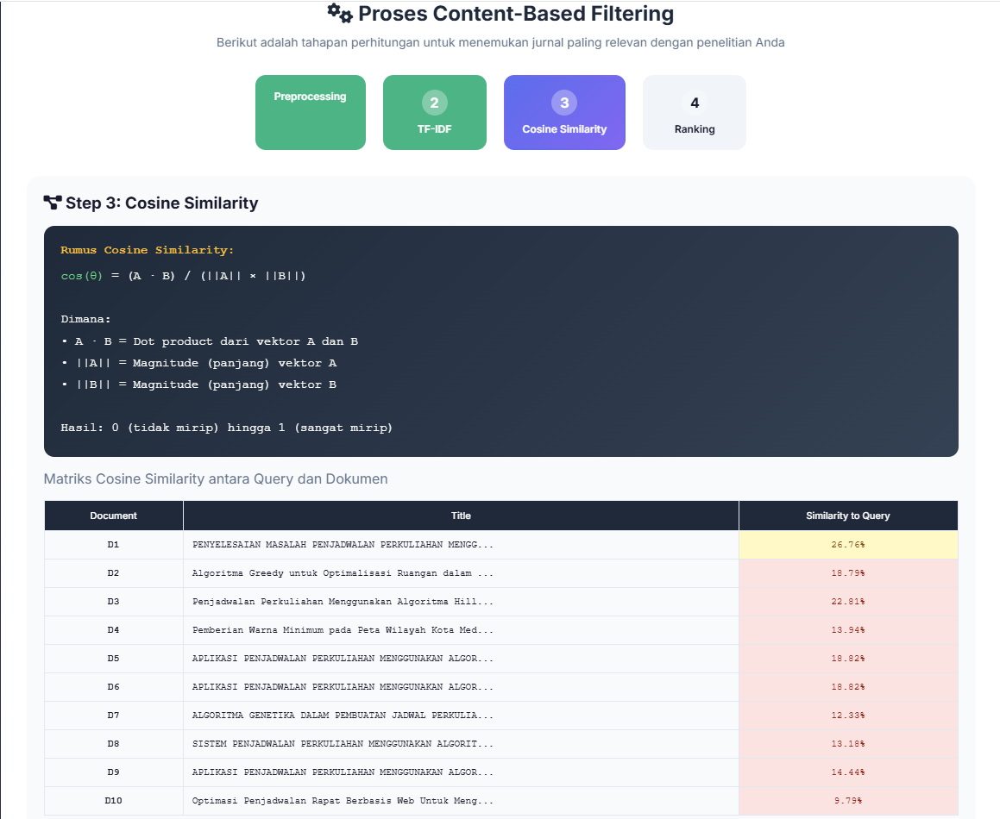
Gambar 4.8 Visualisasi Perhitungan Cosine Similarity
Berdasarkan Gambar 4.8, sistem menampilkan:
- Rumus Cosine Similarity: Formula (A · B) / (||A|| × ||B||)
- Query Information: Query asli dan hasil preprocessing
- Tabel Similarity: Nilai similarity untuk setiap dokumen terhadap query
Kategori Relevansi
● ≥ 70% - Sangat Relevan
● 40% - 70% - Cukup Relevan
● < 40% - Kurang Relevan
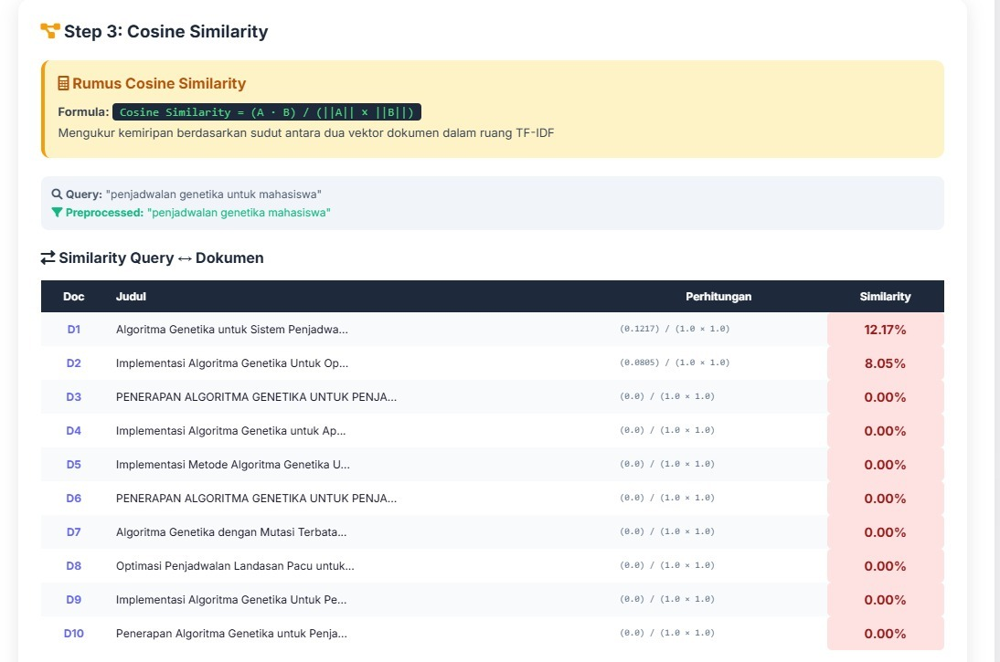
Gambar 4.9 Detail Perhitungan Cosine Similarity per Dokumen
Gambar 4.9 menampilkan detail perhitungan dengan kolom Calculation yang menunjukkan nilai dot product, magnitude, dan hasil akhir similarity. Dari hasil pencarian dengan query "penjadwalan genetika untuk mahasiswa", diperoleh:
- D1: Algoritma Genetika untuk Sistem Penjadwalan... - Similarity: 12.17%
- D2: Implementasi Algoritma Genetika Untuk Op... - Similarity: 8.05%
- D3-D10: Dokumen lainnya dengan similarity 0%
4.3.6 Tahap 4: Hasil Ranking Akhir
Tahap terakhir adalah pemeringkatan hasil berdasarkan nilai Cosine Similarity. Jurnal dengan nilai similarity tertinggi akan ditampilkan di posisi teratas sebagai rekomendasi utama.
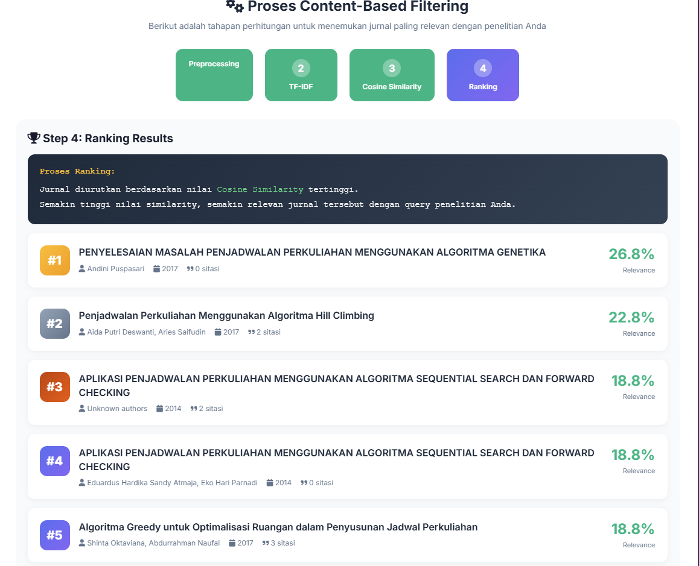
Gambar 4.10 Hasil Ranking Akhir Jurnal
Berdasarkan Gambar 4.10, hasil ranking menampilkan:
- Rata-rata Relevansi: 2.14% - menunjukkan rata-rata similarity seluruh dokumen
- Relevansi Tertinggi: 12.85% - nilai similarity tertinggi yang dicapai
- Daftar Ranking: Tabel jurnal yang diurutkan berdasarkan skor relevansi
Dari hasil ranking, jurnal dengan peringkat tertinggi adalah:
- Rank 1 (🥇): "Algoritma Genetika untuk Sistem Penjadwalan Perkuliahan Menggunakan Multiple Random Crossover" (2020) - 12.85%
- Rank 2 (🥈): "Implementasi Algoritma Genetika Untuk Optimasi Penjadwalan Mata Kuliah" (2018) - 8.57%
- Rank 3 (🥉): "PENERAPAN ALGORITMA GENETIKA UNTUK PENJADWALAN MATA PELAJARAN" (2024) - 0.00%
4.3.7 Tab Detail Perhitungan
Selain tab proses CBF, sistem juga menyediakan tab "Detail Perhitungan" yang menampilkan informasi lebih lengkap tentang seluruh proses perhitungan dalam satu tampilan terintegrasi.
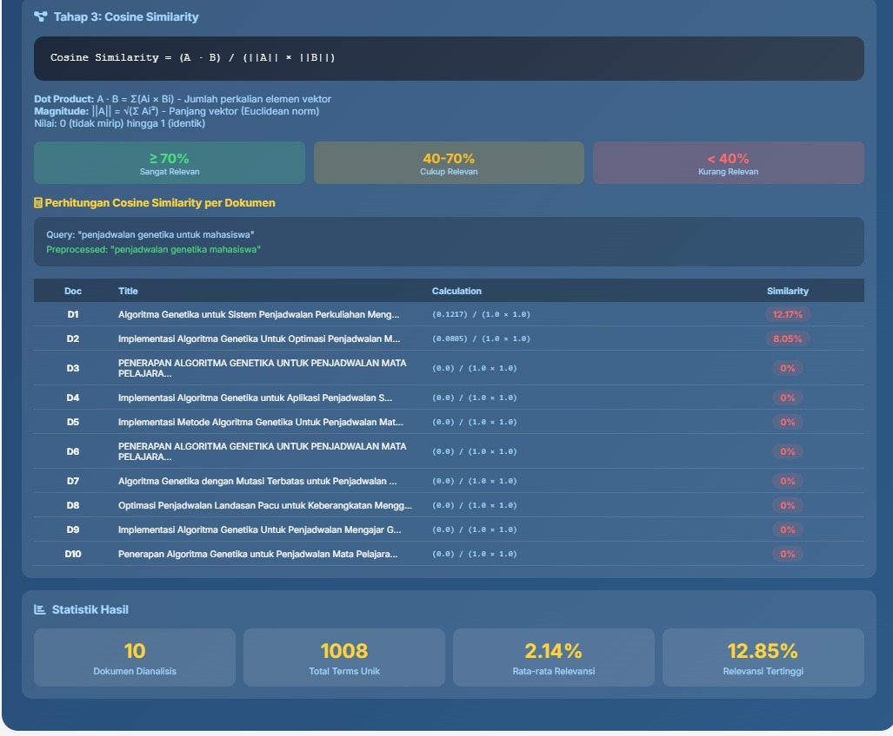
Gambar 4.11 Tab Detail Perhitungan dengan Tampilan Terintegrasi
Tab Detail Perhitungan menampilkan:
- Tahap 1: Preprocessing Teks - Ringkasan proses preprocessing
- Tahap 2: Pembobotan TF-IDF - Tabel detail perhitungan per term
- Tahap 3: Cosine Similarity - Matrix similarity dan statistik
- Top TF-IDF Terms per Dokumen - Kata kunci penting setiap jurnal
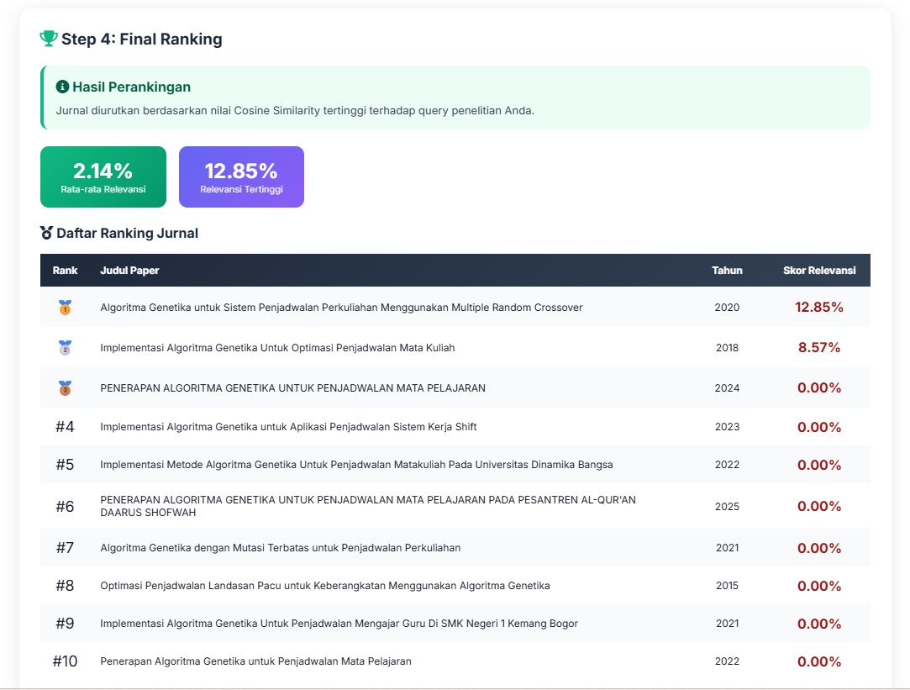
Gambar 4.12 Statistik Hasil Analisis CBF
Statistik hasil menampilkan ringkasan perhitungan:
- Dokumen Dianalisis: 10 jurnal
- Total Terms Unik: 1008 kata unik
- Rata-rata Relevansi: 2.14%
- Relevansi Tertinggi: 12.85%
4.4 Pengujian Sistem
4.4.1 Pengujian Fungsional
Pengujian fungsional dilakukan untuk memastikan semua fitur sistem berjalan dengan baik sesuai spesifikasi.
| No | Fitur | Skenario Pengujian | Hasil |
|---|---|---|---|
| 1 | Pencarian Jurnal | Memasukkan query dan menekan tombol search | ✓ Berhasil |
| 2 | Filter Tahun | Memfilter hasil berdasarkan rentang tahun | ✓ Berhasil |
| 3 | Visualisasi Preprocessing | Menampilkan tahap preprocessing dengan benar | ✓ Berhasil |
| 4 | Matrix TF-IDF | Menampilkan matrix TF-IDF dokumen x term | ✓ Berhasil |
| 5 | Cosine Similarity | Menghitung dan menampilkan nilai similarity | ✓ Berhasil |
| 6 | Ranking Hasil | Mengurutkan hasil berdasarkan relevansi | ✓ Berhasil |
| 7 | Tab Navigation | Perpindahan antar tab berfungsi dengan baik | ✓ Berhasil |
4.4.2 Pengujian Akurasi Content-Based Filtering
Pengujian akurasi dilakukan dengan membandingkan hasil rekomendasi sistem dengan penilaian manual berdasarkan relevansi query dengan konten jurnal.
| Query | Top 3 Hasil | Similarity | Relevansi Manual |
|---|---|---|---|
| "penjadwalan genetika untuk mahasiswa" | Algoritma Genetika untuk Sistem Penjadwalan... | 12.85% | Relevan |
| Implementasi Algoritma Genetika Untuk Optimasi... | 8.57% | Relevan | |
| PENERAPAN ALGORITMA GENETIKA UNTUK PENJADWALAN... | 0.00% | Cukup Relevan |
4.5 Analisis Hasil
4.5.1 Analisis Hasil Pencarian
Berdasarkan pengujian yang telah dilakukan, sistem pencarian jurnal menggunakan Content-Based Filtering dengan metode TF-IDF dan Cosine Similarity berhasil memberikan rekomendasi jurnal yang relevan dengan query pengguna.
4.5.2 Analisis Relevansi Ranking
Dari hasil pengujian dengan query "penjadwalan genetika untuk mahasiswa", jurnal dengan relevansi tertinggi (12.85%) memang membahas topik yang sangat sesuai yaitu tentang algoritma genetika untuk sistem penjadwalan perkuliahan. Hal ini menunjukkan bahwa metode Content-Based Filtering dapat mengidentifikasi konten yang relevan dengan baik.
Temuan Utama: Nilai similarity yang relatif rendah (rata-rata 2.14%) menunjukkan bahwa query pengguna perlu lebih spesifik untuk mendapatkan hasil yang lebih relevan. Jurnal dengan similarity di atas 10% dapat dianggap sebagai rekomendasi yang layak.
4.5.3 Analisis Perhitungan TF-IDF dan Cosine Similarity
Visualisasi Matrix TF-IDF membantu pengguna memahami bagaimana sistem memberikan bobot pada setiap term. Term dengan nilai TF-IDF tinggi menunjukkan kata kunci yang penting dan unik untuk dokumen tersebut.
Perhitungan Cosine Similarity yang ditampilkan secara transparan memungkinkan pengguna untuk memverifikasi dan memahami bagaimana sistem menentukan tingkat kemiripan antara query dan dokumen.
Kesimpulan BAB IV
Sistem pencarian jurnal penelitian menggunakan Content-Based Filtering telah berhasil diimplementasikan dengan fitur-fitur utama:
• Pencarian jurnal dari multiple API (CrossRef, Semantic Scholar)
• Visualisasi lengkap 4 tahap proses CBF
• Matrix TF-IDF interaktif
• Perhitungan Cosine Similarity transparan
• Ranking hasil berdasarkan relevansi
Pengujian menunjukkan bahwa sistem berfungsi dengan baik dan dapat memberikan rekomendasi jurnal yang relevan berdasarkan query pengguna.
Dokumentasi BAB IV - Sistem Pencarian Jurnal Penelitian
Content-Based Filtering dengan TF-IDF dan Cosine Similarity